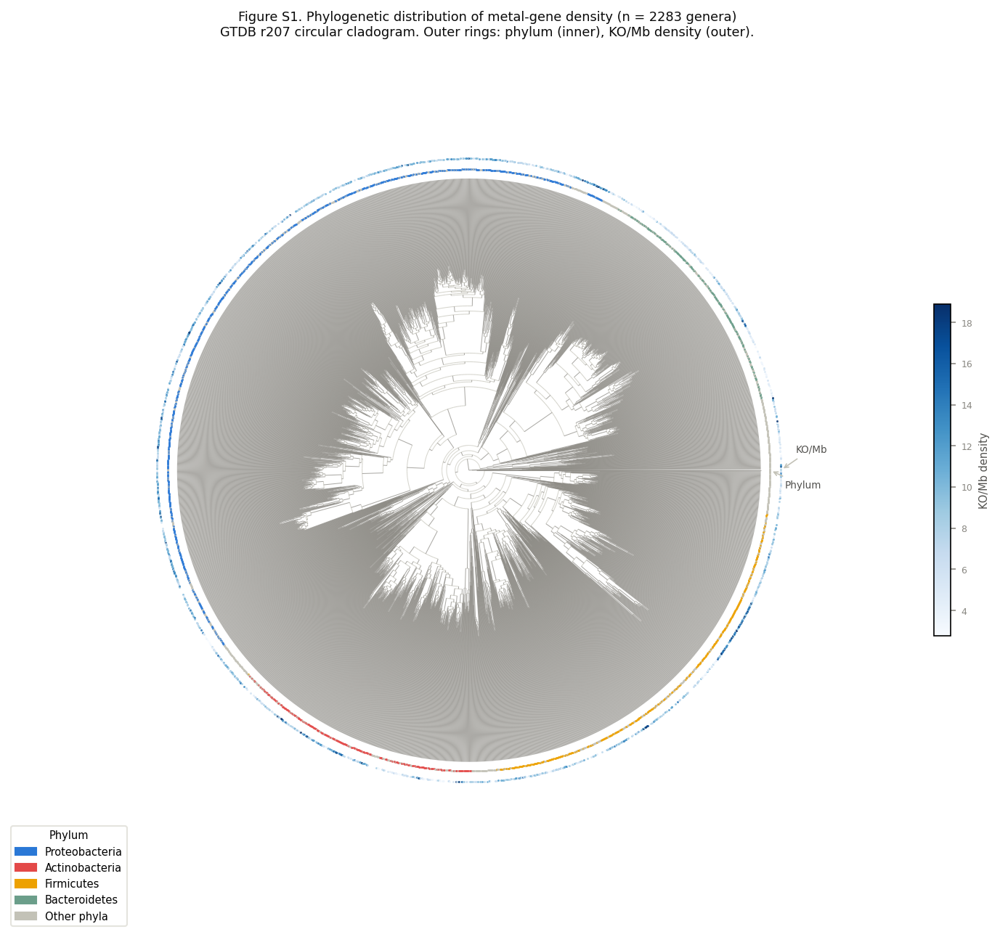

Figure S1. Phylogenetic distribution of metal-gene density across 2,283 bacterial genera (GTDB r207).
Circular cladogram of the GTDB r207 bacterial genus tree pruned to genera with MGnify MAG data. Inner ring: phylum colour (Proteobacteria blue, Actinobacteria red, Firmicutes amber, Bacteroidetes teal, other grey). Outer ring: KO/Mb metal-gene density (light→dark blue gradient). The P1 genera (n = 1,574) overlap with 69% of the tree. Metal-gene density shows no strong phylogenetic clustering — signal is distributed across all major phyla, consistent with horizontal acquisition and/or convergent selection for streamlining under metal exposure.
